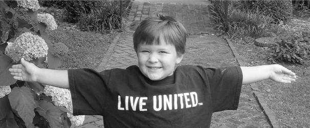

Get Involved

GIVE AN HOUR. GIVE A SATURDAY. GIVE YOUR BEST.
The United Way is working to advance the common good by focusing on education, income and health: the building blocks for a good life. But we can't do it alone. We need the heads, hands and hearts of committed people like you to help us.
Whether it is important to you to solve a community problem, advance a worthy cause or to develop as a person, volunteering offers many benefits in appreciation for the gift of your time and expertise.
- Make important networking contacts
- Learn or develop skills
- Teach your skills to others
- Enhance your résumé
- Gain work experience
- Build self-esteem and self-confidence
- Improve your health
- Meet new people
- Feel needed and valued
- Express gratitude for help you may have received in the past from an organization
- Communicate to others that you are ambitious, enthusiastic and care about the community
- Make a difference in someone’s life
- Improve the likelihood that children will volunteer as an adult
Put your talents to work for your community. Volunteer!
Sign up now to volunteer with the United Way of Athens-Limestone County:
Volunteer Registration Form
Submit your group application with the United Way of Athens-Limestone County:
Group Application Form
Contact Us
419 South Marion Street
Athens, AL 35611
unitedway44@unitedwayalc.com
256-233-2323


Tweets by @UWlimestone